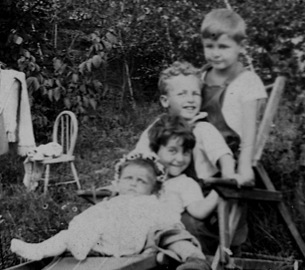

In this clip the four sisters remind Pearl Rosenberg Siegel (who is off camera) that her first language was Yiddish.



While you’re waiting for the movie to load, below are two great pictures of Anna, Ed, Danny, Pearl and Irene from the period being discussed in the clip.